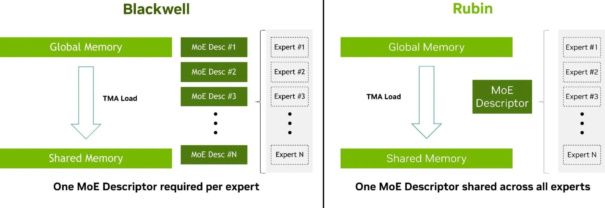
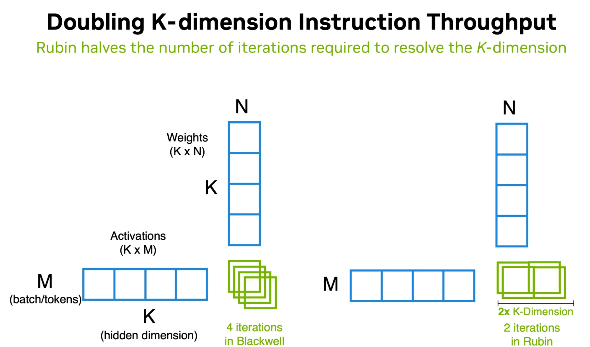
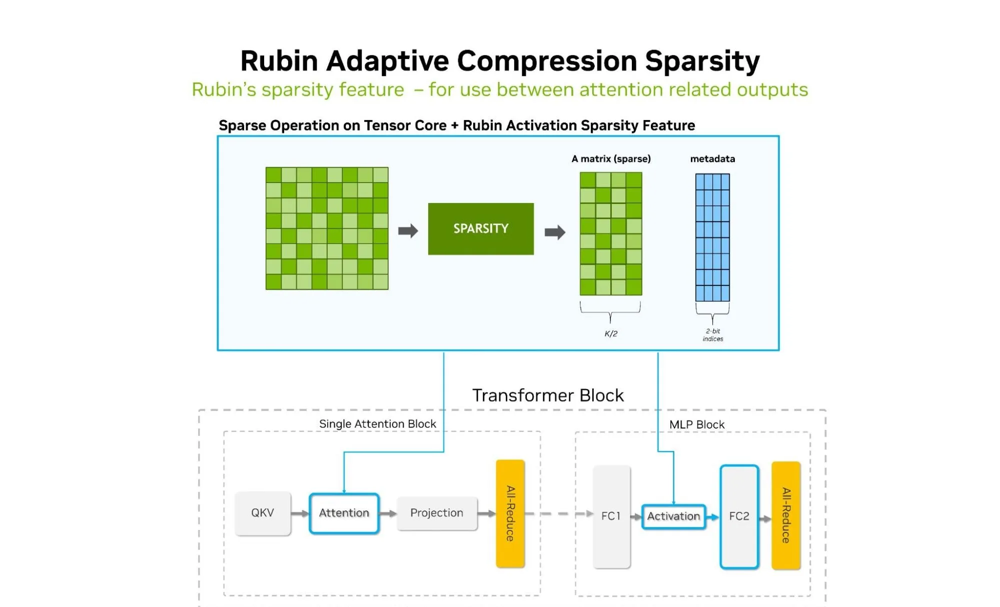
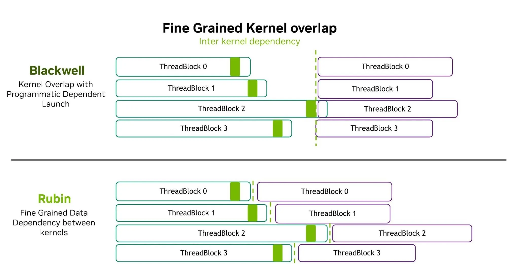
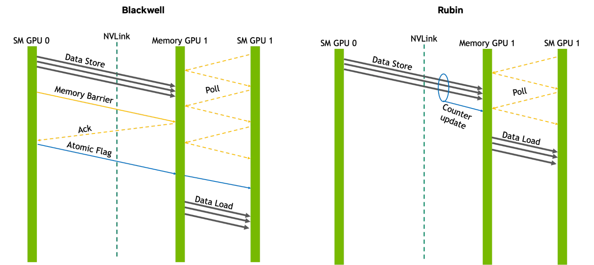
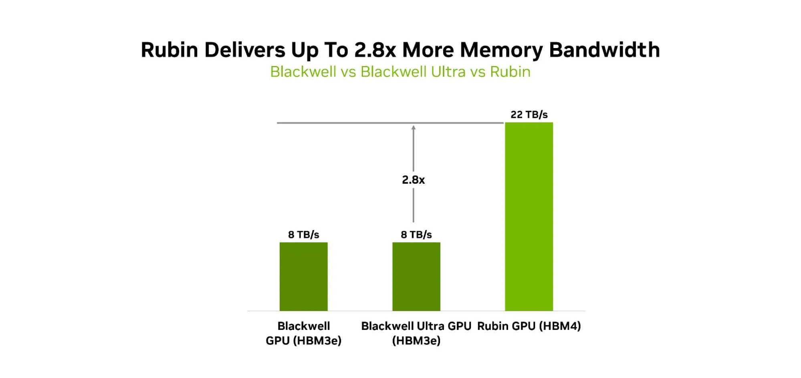
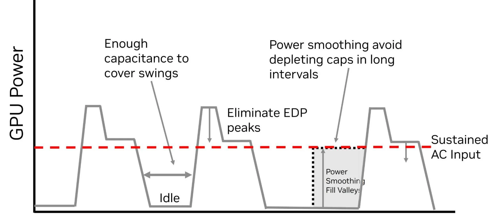
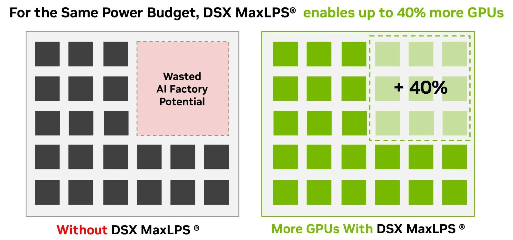

Agentic工作负载不再是单次提示和响应的简单循环，而是持续的推理过程：推理、规划、使用工具、验证中间结果、在超长上下文中执行复杂的多步任务。 这要求低延迟、高解码吞吐、高效长上下文注意力、大KV cache容量，以及跨紧密耦合GPU域扩展模型的能力。
NVIDIA Rubin GPU正是为此设计。相比Blackwell，Rubin实现了每瓦Agentic吞吐最高10x的提升。 增强的Tensor Core、新的HBM4内存子系统、以及第三代Transformer Engine（提供高达50 PFLOPS NVFP4性能），共同加速Agentic工作负载。
Rubin GPU由两颗光罩限制计算芯片（reticle-limited compute dies）构成，通过高速片间互联NV-HBI（NVIDIA High-Bandwidth Interface）统一封装。3360亿晶体管、224个流式多处理器（SM）、896个Tensor Core，提供原始计算密度。
第三代Transformer Engine可在多种数值格式间灵活切换精度，支持高达 50 PFLOPS的NVFP4推理性能，同时保持精度。
内存方面：288 GB HBM4，12-Hi堆叠，提供 22 TB/s峰值带宽。互联方面：NVLink 6提供3600 GB/s scale-up带宽，NVLink-C2C提供1800 GB/s CPU-GPU一致性互联，PCIe Gen 6 x16提供256 GB/s主机连接。
此外，TEE-I/O机密计算为AI Factory中静态、传输中和使用中的数据提供安全保障。
峰值算力本身不足以加速Agentic推理。实际性能取决于GPU如何高效搬运数据、执行矩阵运算、处理长上下文注意力、以及在依赖kernel之间切换。 Rubin在以下关键路径上做了针对性优化。
混合专家（MoE）模型将token动态路由到多个专家网络。随着专家数量增长，高效定位和搬运专家权重变得越来越重要。
Rubin增强了Tensor Memory Accelerator（TMA），支持内联描述符更新。kernel可以为共享相同布局的tensor保留一个统一描述符，在TMA指令中直接覆盖内存指针和步长（stride），无需在内存中修改描述符。
这意味着：Blackwell需要为每个专家维护一个描述符，Rubin只需一个描述符供所有专家共享。 专家越多，省下的元数据管理开销越大。

矩阵运算（GEMM）是推理的核心。Rubin Tensor Core将单个warp级矩阵指令的K维度（累加维度）处理能力提升到Blackwell的两倍：在Rubin上只需2次迭代完成的工作，Blackwell需要4次。
这相当于GEMM指令吞吐翻倍，在大Batch推理和专家并行场景中效果显著：每次矩阵运算可处理更大K维度，减少迭代次数和调度开销。

Agentic推理中，长上下文导致attention和MLP激活值占据大量内存带宽和存储。Rubin引入自适应压缩和稀疏性，对每个Transformer层的attention和MLP激活阶段应用。
在推理时，密集激活张量被转换为带有元数据的稀疏张量，跳过零值或接近零值的元素。自适应之处在于压缩率和稀疏率根据每层的内容分布动态调整，非静态固定。这减少了需要搬运的数据量，间接提高了有效内存带宽利用率。

推理kernel以流水线方式执行，前一个kernel的输出是后一个kernel的输入。Blackwell中，消费者kernel的线程块在生产者kernel的线程块完成后才能开始：即使生产者只完成了一部分。
Rubin引入了数据驱动轮询（data-driven polling）：消费者线程块不需要等待整个生产者kernel完成，一旦生产者线程块完成其输出数据的部分，消费者就可以立即开始读取并处理。这使得kernel间的流水线重叠更细粒度，减少了端到端延迟。

随着模型、上下文窗口和GPU域的增长，数据搬运变得与计算同等重要。Rubin在内存和通信方面做了以下创新。
当通信直接融合在GPU kernel内部时，kernel不会停止并将控制权交回CPU：它直接通过NVLink将数据写到另一个GPU，或执行规约操作，同时计算仍在进行。
Rubin引入了 counted writes 用于设备发起的NVLink通信。传统方案需要内存屏障、确认信号和原子标志；Rubin只需一个计数器更新，接收GPU即可高效跟踪传输完成。这减少了GPU间数据搬运的同步延迟。

推理的解码阶段本质上是内存子系统受限的。 Agentic工作负载通过长上下文、大KV cache和交互式token生成，放大了这一约束。
Rubin的HBM4将接口宽度相对于HBM3e翻倍，结合新的内存控制器、深度生态协同以及紧耦合的计算-内存集成，提供 22 TB/s内存带宽：Blackwell的2.8倍。同时提供单GPU最高 288 GB HBM4容量，支持更大的模型驻留、更长的上下文和大KV cache而无需卸载。
容量和带宽的角色不同但互补： 容量支持模型驻留和更大KV cache（减少卸载）；带宽支撑逐token生成阶段（快速搬运权重和KV状态）；TMA和内存局部性策略帮助软件高效利用内存子系统。

Agentic AI基础设施需要优化的不止是单个GPU，而是整个AI Factory的功耗、散热、网络和机架级资源利用。
AI工作负载的功耗需求剧烈波动，产生瞬时峰值，导致可用容量被闲置。Vera Rubin电源使用SoC（荷电状态）智能功率平滑来吸收这些波动，平均功耗降低约10%，50ms峰值功耗降低约20%。

在AI Factory层面，NVIDIA DSX MaxLPS将功率平滑扩展到GPU之间、机架之间和整个工作负载。结合45°C液冷和DSX OS调度层，在相同功耗预算下可多部署最多40% 的GPU，同时对工作负载性能影响最小。

参考：https://developer.nvidia.com/blog/inside-nvidia-rubin-gpu-architecture-powering-the-era-of-agentic-ai/